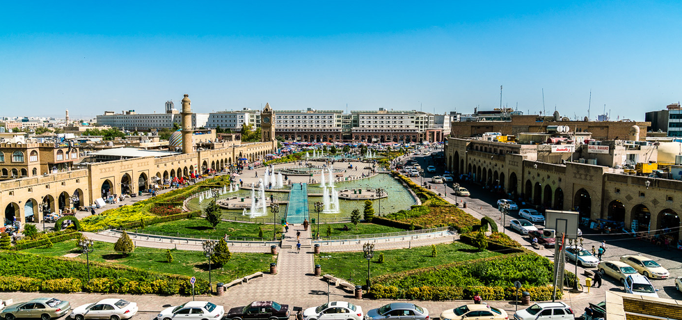
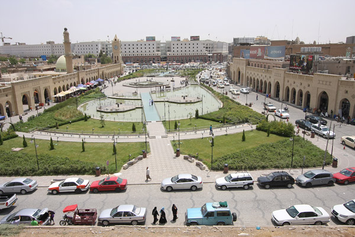

Erbil or Hawler (Kurdish: ھەولێر ,Hewlêr Arabic: أربيل, romanized: Arbīl or Arwīl, Syriac: ܐܲܪܒܹܝܠ, or Arbel) known in ancient history as Arbela, is the capital and most populated city in the Kurdistan Region of Iraq.
It has around 1.5 million inhabitants, while Erbil Governorate has 2,932,800 inhabitants as of 2020.

Erbil's archaeological museum houses a large collection of pre-Islamic artefacts, particularly the art of Mesopotamia, and is a center for archaeological projects in the area.[13] The city was designated as Arab Tourism Capital 2014 by the Arab Council of Tourism. In July 2014, the Citadel of Arbil was inscribed as a World Heritage site.
The city has an ethnically diverse population of Kurds, Turkmens, Assyrians, Arabs and Armenians. It is equally religiously diverse, with believers of Sunni Islam, Shia Islam, Christianity, Yarsanism and Yazidism.
